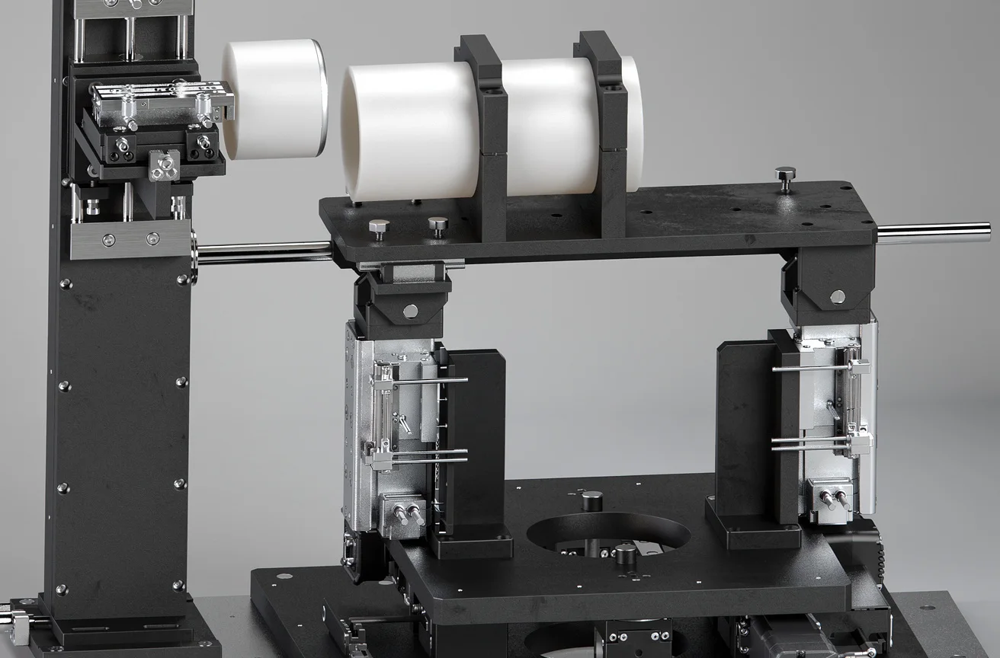
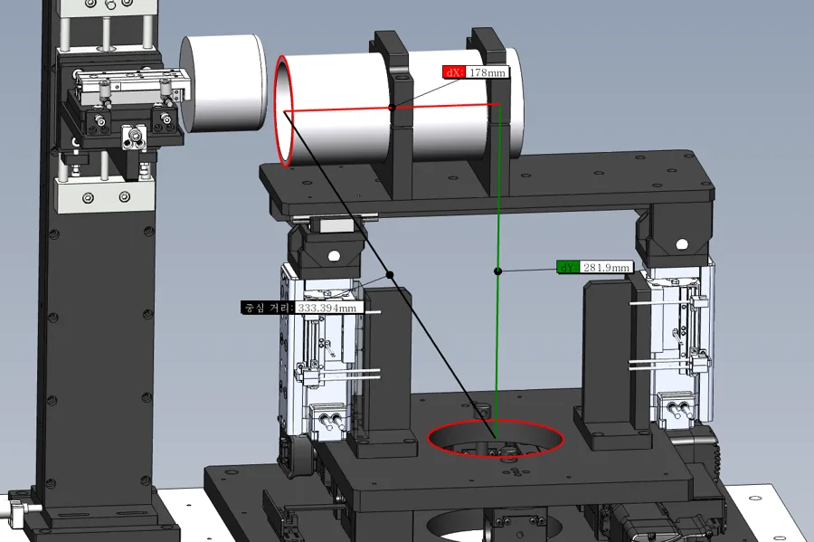

KOREATECH, Mar 2023 – Feb 2025
Vision-Based Alignment for Film Roll Handling
Camera-based pose estimation that aligns two cylinders for automated insertion.
- Role
- Graduate researcher
- Where
- KOREATECH
- Problem
- One cylinder into another
- Measured
- dX, dY and centre distance
Overview
In film production lines that cut and align large rolls, one cylinder must be inserted into another. A camera mounted in the base looks up at the open end of the cylinder, locates it and measures its offset so the insertion can be corrected.

CAD Model
